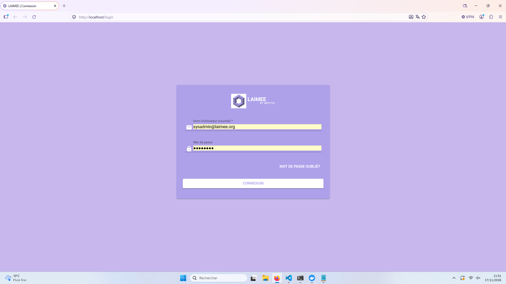
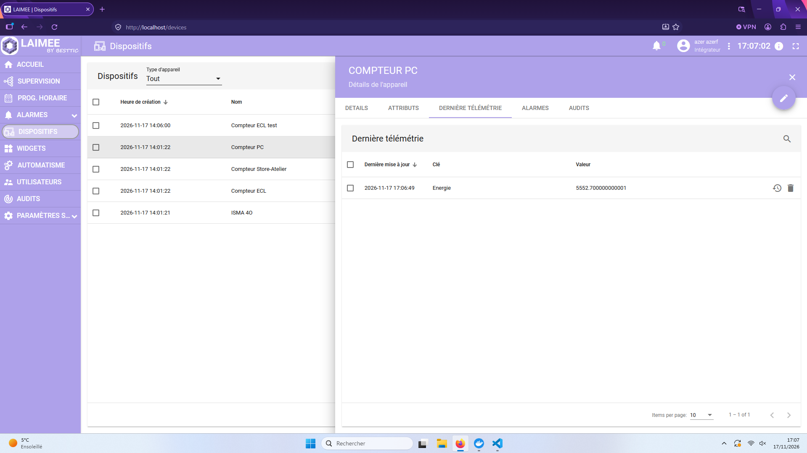
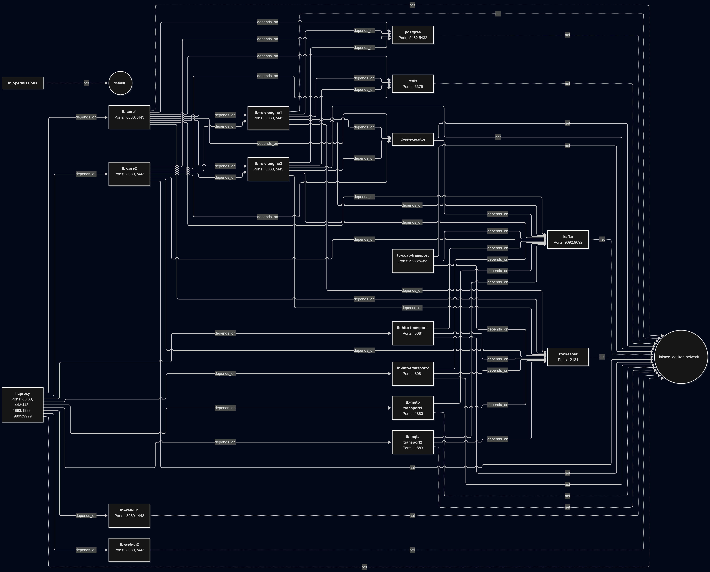
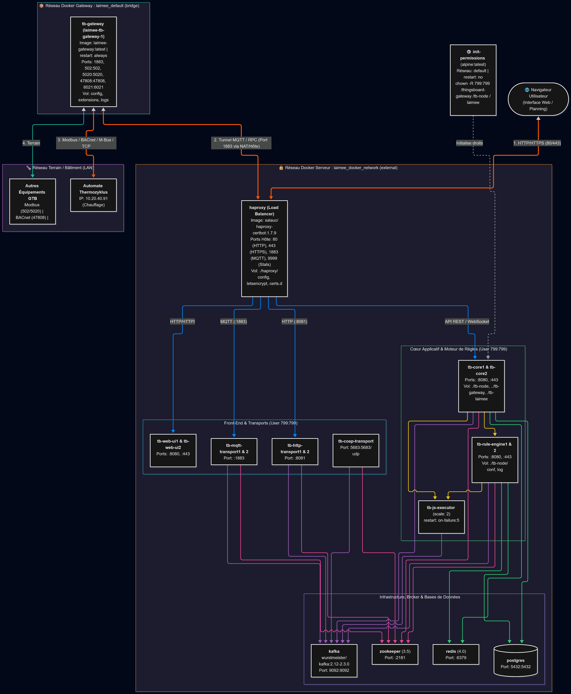

1. Mutation des scripts de LAIMEE vers Windows
Cette section présente le script Batch (installer-windows.bat) permettant d’automatiser le déploiement complet de l’infrastructure LAIMEE sous Windows via Docker Desktop.
| Assurez-vous que Docker Desktop est démarré avant d’exécuter ce script. |
1.1. Étapes réalisées par le script
Le script exécute automatiquement les 7 étapes suivantes :
-
Création de l’arborescence locale des dossiers de logs et de configuration.
-
Extraction des configurations depuis les images Docker et conversion au format Unix (
LF). -
Génération dynamique du fichier de routage
haproxy.cfg. -
Création du réseau Docker dédié (
laimee_docker_network). -
Chargement des variables d’environnement via
compose-utils.bat. -
Initialisation de la base de données PostgreSQL (uniquement au premier lancement).
-
Démarrage des conteneurs et ouverture automatique de l’interface web.
1.2. Code source complet
@echo off
setlocal enabledelayedexpansion
echo ===================================================
echo DEMARRAGE AUTOMATIQUE DE LAIMEE SOUS WINDOWS
echo ===================================================
REM 1. Creation des dossiers de logs et de configuration
echo [1/7] Verification des dossiers locaux...
for %%f in (tb-core1 tb-core2 tb-rule-engine1 tb-rule-engine2) do (
if not exist "tb-node\log\%%f" mkdir "tb-node\log\%%f"
)
for %%d in (
"tb-node\conf"
"tb-transports\coap\conf"
"tb-transports\coap\log\tb-coap-transport"
"tb-transports\http\conf"
"tb-transports\http\log\tb-http-transport1"
"tb-transports\http\log\tb-http-transport2"
"tb-transports\mqtt\conf"
"tb-transports\mqtt\log\tb-mqtt-transport1"
"tb-transports\mqtt\log\tb-mqtt-transport2"
"haproxy\config"
"haproxy\letsencrypt"
"haproxy\certs.d"
"%USERPROFILE%\.tb-gateway"
"%USERPROFILE%\.tb-laimee"
) do (
if not exist %%d mkdir %%d
)
REM 2. Extraction automatique des fichiers conf + correction localhost->postgres (format Unix LF)
if not exist "tb-node\conf\laimee.conf" (
echo [2/7] Extraction des fichiers de configuration depuis les images Docker...
docker create --name temp-node laimee/tb-node:latest >nul
docker cp temp-node:/usr/share/laimee/conf/. tb-node\conf\
docker rm temp-node >nul
docker create --name temp-mqtt laimee/tb-mqtt-transport:latest >nul
docker cp temp-mqtt:/usr/share/tb-mqtt-transport/conf/. tb-transports\mqtt\conf\
docker rm temp-mqtt >nul
docker create --name temp-http laimee/tb-http-transport:latest >nul
docker cp temp-http:/usr/share/tb-http-transport/conf/. tb-transports\http\conf\
docker rm temp-http >nul
docker create --name temp-coap laimee/tb-coap-transport:latest >nul
docker cp temp-coap:/usr/share/tb-coap-transport/conf/. tb-transports\coap\conf\
docker rm temp-coap >nul
) else (
echo [2/7] Fichiers de configuration deja presents.
)
REM Nettoyage propre de laimee.conf (format Unix LF sans \r + postgres:5432)
docker run --rm -v "%CD%\tb-node\conf:/conf" postgres:12 sed -i -e "s/\r//g" -e "s/localhost:5432/postgres:5432/g" /conf/laimee.conf
REM 3. Generation automatique de haproxy.cfg (sans check bloquant)
echo [3/7] Configuration de HAProxy...
(
echo global
echo maxconn 4096
echo.
echo defaults
echo mode http
echo timeout connect 5000ms
echo timeout client 50000ms
echo timeout server 50000ms
echo.
echo frontend http-in
echo bind *:80
echo acl is_api path_beg /api /swagger /webjars /v2/api-docs
echo acl is_telemetry path_beg /api/v1
echo use_backend tb_http_backend if is_telemetry
echo use_backend tb_core_backend if is_api
echo default_backend tb_web_ui_backend
echo.
echo backend tb_core_backend
echo balance roundrobin
echo server tb-core1 tb-core1:8080
echo server tb-core2 tb-core2:8080
echo.
echo backend tb_http_backend
echo balance roundrobin
echo server tb-http1 tb-http-transport1:8081
echo server tb-http2 tb-http-transport2:8081
echo.
echo backend tb_web_ui_backend
echo balance roundrobin
echo server tb-web-ui1 tb-web-ui1:8080
echo server tb-web-ui2 tb-web-ui2:8080
echo.
echo frontend mqtt-in
echo bind *:1883
echo mode tcp
echo default_backend tb_mqtt_backend
echo.
echo backend tb_mqtt_backend
echo mode tcp
echo balance roundrobin
echo server tb-mqtt1 tb-mqtt-transport1:1883
echo server tb-mqtt2 tb-mqtt-transport2:1883
) > "haproxy\config\haproxy.cfg"
REM 4. Creation du reseau Docker si inexistant
echo [4/7] Verification du reseau Docker laimee_docker_network...
docker network inspect laimee_docker_network >nul 2>&1
if errorlevel 1 (
docker network create --driver=bridge --subnet=172.23.0.0/24 --gateway=172.23.0.1 laimee_docker_network >nul
)
REM 5. Lecture des arguments Compose (.env)
call compose-utils.bat :additionalComposeQueueArgs
if errorlevel 1 exit /b %errorlevel%
call compose-utils.bat :additionalComposeArgs
if errorlevel 1 exit /b %errorlevel%
call compose-utils.bat :additionalStartupServices
if errorlevel 1 exit /b %errorlevel%
REM 6. Detection et installation automatique de la base de donnees si vierge
if not exist "tb-node\postgres\PG_VERSION" (
echo [5/7] Base de donnees vierge detectee : installation des tables SQL en cours...
docker compose -p laimee -f docker-compose.yml %ADDITIONAL_COMPOSE_ARGS% %ADDITIONAL_COMPOSE_QUEUE_ARGS% up -d redis %ADDITIONAL_STARTUP_SERVICES%
timeout /t 5 /nobreak >nul
docker compose -p laimee -f docker-compose.yml %ADDITIONAL_COMPOSE_ARGS% %ADDITIONAL_COMPOSE_QUEUE_ARGS% run --no-deps --rm -e INSTALL_TB=true -e LOAD_DEMO=false -e INSTALL_DATA_DIR=/usr/share/laimee/data tb-core1
if errorlevel 1 (
echo Erreur lors de l'initialisation de la base de donnees.
pause
exit /b 1
)
) else (
echo [5/7] Base de donnees deja initialisee.
)
REM 7. Demarrage complet de tous les services et synchronisation HAProxy
echo [6/7] Demarrage de tous les conteneurs...
docker compose -p laimee -f docker-compose.yml %ADDITIONAL_COMPOSE_ARGS% %ADDITIONAL_COMPOSE_QUEUE_ARGS% up -d
if errorlevel 1 exit /b %errorlevel%
echo [7/7] Attente que le serveur backend soit operationnel (cette etape prend environ 3 a 5 minutes)...
set /a elapsed=0
:wait_backend
timeout /t 30 /nobreak >nul
set /a elapsed+=30
set /a mins=elapsed / 60
set /a secs=elapsed %% 60
if !secs! lss 10 set "secs=0!secs!"
docker exec laimee-tb-core1-1 bash -c "echo > /dev/tcp/localhost/8080" >nul 2>&1
if errorlevel 1 (
echo [!mins!m !secs!s] Demarrage des services Java en cours, merci de patienter...
goto :wait_backend
)
echo Serveur operationnel ! Synchronisation de HAProxy...
docker restart haproxy-certbot >nul 2>&1
timeout /t 3 /nobreak >nul
start http://localhost
echo.
echo ===================================================
echo TOUT EST PRET !
echo Interface Web : http://localhost
echo Identifiant : sysadmin@laimee.org
echo Mot de passe : sysadmin
echo ===================================================
echo.
À la fin de l’exécution, l’interface web s’ouvre automatiquement à l’adresse http://localhost avec les identifiants par défaut.
|
1.3. Mécanisme d’attente et détection du démarrage du backend
Le démarrage des microservices Java de ThingsBoard (tb-core1) prend généralement entre 3 et 5 minutes. Si le navigateur ou HAProxy tente d’accéder à l’interface avant la fin de cette initialisation, une erreur 503 Service Unavailable s’affiche.
Pour éviter ce problème, l’étape [7/7] du script met en place une boucle de surveillance active :
echo [7/7] Attente que le serveur backend soit operationnel (cette etape prend environ 3 a 5 minutes)...
set /a elapsed=0
:wait_backend
timeout /t 30 /nobreak >nul
set /a elapsed+=30
set /a mins=elapsed / 60
set /a secs=elapsed %% 60
if !secs! lss 10 set "secs=0!secs!"
docker exec laimee-tb-core1-1 bash -c "echo > /dev/tcp/localhost/8080" >nul 2>&1
if errorlevel 1 (
echo [!mins!m !secs!s] Demarrage des services Java en cours, merci de patienter...
goto :wait_backend
)1.3.1. Fonctionnement détaillé
-
Temporisation (
timeout /t 30 /nobreak) : Le script marque une pause de 30 secondes à chaque cycle sans pouvoir être interrompu par une touche accidentelle. -
Chronomètre dynamique (
!mins!m !secs!s) : À chaque tour de boucle, la variableelapsedest incrémentée de 30 secondes. Le script convertit ce total en minutes (elapsed / 60) et secondes (elapsed %% 60), en ajoutant un zéro devant les secondes inférieures à 10 (if !secs! lss 10) pour un affichage propre (ex.01m 30s). -
Sonde TCP interne (
docker exec … /dev/tcp/localhost/8080) : Le script exécute un test de connexion TCP directement à l’intérieur du conteneurlaimee-tb-core1-1sur le port8080. -
Condition de sortie (
if errorlevel 1) : -
Tant que le port
8080est fermé, la commande renvoie un code d’erreur (1), le message de progression s’affiche et le script reboucle sur l’étiquette:wait_backend. -
Dès que le serveur Java ouvre le port
8080, la commande réussit (errorlevel 0), ce qui libère le script pour redémarrer HAProxy et ouvrir automatiquementhttp://localhost.
Si l’image Docker utilisée ne dispose pas de bash (cas des images minimales sous /bin/sh), la sonde /dev/tcp peut être remplacée par une lecture directe de la table réseau du noyau Linux : docker exec laimee-tb-core1-1 grep -qi ":1F90" /proc/net/tcp /proc/net/tcp6 (où 1F90 correspond au port 8080 en hexadécimal).
|
1.4. Résultat de l’execution du script dans le terminal
PS C:\Users\Dev-Sta-1\Documents\Melvin\laimee> .\installer-windows.bat
===================================================
DEMARRAGE AUTOMATIQUE DE LAIMEE SOUS WINDOWS
===================================================
[1/7] Verification des dossiers locaux...
[2/7] Extraction des fichiers de configuration depuis les images Docker...
Successfully copied 175kB to C:\Users\Dev-Sta-1\Documents\Melvin\laimee\tb-node\conf\
Successfully copied 23.6kB to C:\Users\Dev-Sta-1\Documents\Melvin\laimee\tb-transports\mqtt\conf\
Successfully copied 22kB to C:\Users\Dev-Sta-1\Documents\Melvin\laimee\tb-transports\http\conf\
Successfully copied 22.5kB to C:\Users\Dev-Sta-1\Documents\Melvin\laimee\tb-transports\coap\conf\
[3/7] Configuration de HAProxy...
[4/7] Verification du reseau Docker laimee_docker_network...
[5/7] Base de donnees vierge detectee : installation des tables SQL en cours...
[+] up 2/2
✔ Container laimee-redis-1 Started 0.5s
✔ Container laimee-postgres-1 Started 0.8s
[+] run 1/1
✔ Container laimee-tb-core1-run-63cf0c987e9a Created 0.1s
TB-NODE
Starting Laimee installation ...
OpenJDK 64-Bit Server VM warning: Option UseConcMarkSweepGC was deprecated in version 9.0 and will likely be removed in a future release.
11:21:44,572 |-INFO in ch.qos.logback.classic.LoggerContext[default] - Could NOT find resource [logback-test.xml]
11:21:44,576 |-INFO in ch.qos.logback.classic.LoggerContext[default] - Could NOT find resource [logback.groovy]
11:21:44,582 |-INFO in ch.qos.logback.classic.LoggerContext[default] - Found resource [logback.xml] at [file:/config/logback.xml]
11:21:44,594 |-WARN in ch.qos.logback.classic.LoggerContext[default] - Resource [logback.xml] occurs multiple times on the classpath.
11:21:44,594 |-WARN in ch.qos.logback.classic.LoggerContext[default] - Resource [logback.xml] occurs at [file:/usr/share/laimee/conf/logback.xml]
11:21:44,594 |-WARN in ch.qos.logback.classic.LoggerContext[default] - Resource [logback.xml] occurs at [file:/config/logback.xml]
11:21:45,136 |-INFO in ch.qos.logback.classic.joran.action.ConfigurationAction - debug attribute not set
11:21:45,204 |-INFO in ch.qos.logback.classic.joran.action.ConfigurationAction - Will scan for changes in [file:/config/logback.xml]
11:21:45,204 |-INFO in ch.qos.logback.classic.joran.action.ConfigurationAction - Setting ReconfigureOnChangeTask scanning period to 10 seconds
11:21:45,223 |-INFO in ch.qos.logback.core.joran.action.AppenderAction - About to instantiate appender of type [ch.qos.logback.core.rolling.RollingFileAppender]
11:21:45,247 |-INFO in ch.qos.logback.core.joran.action.AppenderAction - Naming appender as [fileLogAppender]
11:21:45,307 |-INFO in c.q.l.core.rolling.SizeAndTimeBasedRollingPolicy@1967892594 - setting totalSizeCap to 3 GB
11:21:45,323 |-INFO in c.q.l.core.rolling.SizeAndTimeBasedRollingPolicy@1967892594 - Archive files will be limited to [100 MB] each.
11:21:45,442 |-INFO in c.q.l.core.rolling.SizeAndTimeBasedRollingPolicy@1967892594 - No compression will be used
11:21:45,450 |-INFO in c.q.l.core.rolling.SizeAndTimeBasedRollingPolicy@1967892594 - Will use the pattern /var/log/laimee/laimee.%d{yyyy-MM-dd}.%i.log for the active file
11:21:45,457 |-INFO in ch.qos.logback.core.rolling.SizeAndTimeBasedFNATP@146ba0ac - The date pattern is 'yyyy-MM-dd' from file name pattern '/var/log/laimee/laimee.%d{yyyy-MM-dd}.%i.log'.
11:21:45,457 |-INFO in ch.qos.logback.core.rolling.SizeAndTimeBasedFNATP@146ba0ac - Roll-over at midnight.
11:21:45,474 |-INFO in ch.qos.logback.core.rolling.SizeAndTimeBasedFNATP@146ba0ac - Setting initial period to Tue Nov 17 11:21:45 CET 2026
11:21:45,485 |-INFO in ch.qos.logback.core.joran.action.NestedComplexPropertyIA - Assuming default type [ch.qos.logback.classic.encoder.PatternLayoutEncoder] for [encoder] property
11:21:45,560 |-INFO in ch.qos.logback.core.rolling.RollingFileAppender[fileLogAppender] - Active log file name: /var/log/laimee/laimee.log
11:21:45,560 |-INFO in ch.qos.logback.core.rolling.RollingFileAppender[fileLogAppender] - File property is set to [/var/log/laimee/laimee.log]
11:21:45,567 |-INFO in ch.qos.logback.classic.joran.action.LoggerAction - Setting level of logger [org.thingsboard.server] to INFO
11:21:45,567 |-INFO in ch.qos.logback.classic.joran.action.LoggerAction - Setting level of logger [com.microsoft.azure.servicebus.primitives.CoreMessageReceiver] to OFF
11:21:45,567 |-INFO in ch.qos.logback.classic.joran.action.RootLoggerAction - Setting level of ROOT logger to INFO
11:21:45,567 |-INFO in ch.qos.logback.core.joran.action.AppenderRefAction - Attaching appender named [fileLogAppender] to Logger[ROOT]
11:21:45,569 |-INFO in ch.qos.logback.classic.joran.action.ConfigurationAction - End of configuration.
11:21:45,571 |-INFO in ch.qos.logback.classic.joran.JoranConfigurator@4dfa3a9d - Registering current configuration as safe fallback point
WARNING: An illegal reflective access operation has occurred
WARNING: Illegal reflective access by org.codehaus.groovy.vmplugin.v7.Java7$1 (jar:file:/usr/share/laimee/bin/laimee.jar!/BOOT-INF/lib/groovy-2.5.7-indy.jar!/) to constructor java.lang.invoke.MethodHandles$Lookup(java.lang.Class,int)
WARNING: Please consider reporting this to the maintainers of org.codehaus.groovy.vmplugin.v7.Java7$1
WARNING: Use --illegal-access=warn to enable warnings of further illegal reflective access operations
WARNING: All illegal access operations will be denied in a future release
===================================================
:: Laimee :: (v3.1.1-SNAPSHOT)
===================================================
Starting Laimee Installation...
Installing DataBase schema for entities...
Installing SQL DataBase schema part: schema-entities.sql
Installing SQL DataBase schema indexes part: schema-entities-idx.sql
Installing DataBase schema for timeseries...
Installing SQL DataBase schema part: schema-ts-psql.sql
Successfully executed query: CREATE TABLE IF NOT EXISTS ts_kv_indefinite PARTITION OF ts_kv DEFAULT;
Loading system data...
Installation finished successfully!
[6/7] Demarrage de tous les conteneurs...
[+] up 19/19
✔ Container laimee-postgres-1 Running 0.0s
✔ Container laimee-redis-1 Running 0.0s
✔ Container laimee-init-permissions-1 Started 3.1s
✔ Container laimee-tb-web-ui2-1 Started 4.3s
✔ Container laimee-zookeeper-1 Started 5.0s
✔ Container laimee-kafka-1 Started 5.5s
✔ Container laimee-tb-web-ui1-1 Started 3.7s
✔ Container laimee-tb-js-executor-1 Started 5.6s
✔ Container laimee-tb-js-executor-2 Started 6.4s
✔ Container laimee-tb-http-transport1-1 Started 9.3s
✔ Container laimee-tb-http-transport2-1 Started 8.5s
✔ Container laimee-tb-mqtt-transport1-1 Started 7.8s
✔ Container laimee-tb-mqtt-transport2-1 Started 6.9s
✔ Container laimee-tb-coap-transport-1 Started 10.2s
✔ Container laimee-tb-rule-engine1-1 Started 10.7s
✔ Container laimee-tb-rule-engine2-1 Started 11.4s
✔ Container laimee-tb-core2-1 Started 11.8s
✔ Container laimee-tb-core1-1 Started 13.7s
✔ Container haproxy-certbot Started 17.2s
[7/7] Attente que le serveur backend soit operationnel (cette etape prend environ 3 a 5 minutes)...
[0m 30s] Demarrage des services Java en cours, merci de patienter...
[1m 00s] Demarrage des services Java en cours, merci de patienter...
[1m 30s] Demarrage des services Java en cours, merci de patienter...
[2m 00s] Demarrage des services Java en cours, merci de patienter...
[2m 30s] Demarrage des services Java en cours, merci de patienter...
[3m 00s] Demarrage des services Java en cours, merci de patienter...
[3m 30s] Demarrage des services Java en cours, merci de patienter...
[4m 00s] Demarrage des services Java en cours, merci de patienter...
Serveur operationnel Synchronisation de HAProxy...
===================================================
TOUT EST PRET
Interface Web : http://localhost
Identifiant : sysadmin@laimee.org
Mot de passe : sysadmin
===================================================1.4.1. Docker compose
docker-compose.yml
services:
# --- NOUVEAU SERVICE À AJOUTER ---
init-permissions:
image: alpine:latest
user: "0:0"
volumes:
- ../tb-gateway:/thingsboard-gateway:rw
- ./tb-node:/tb-node:rw
- ./tb-laimee:/laimee:rw
command: >
sh -c "chown -R 799:799 /thingsboard-gateway /tb-node /laimee &&
chmod -R 775 /thingsboard-gateway"
restart: "no"
# --- SERCIVE PAR DEFAUT ---
zookeeper:
restart: always
image: "zookeeper:3.5"
networks:
- laimee_docker_network
pull_policy: missing
ports:
- "2181"
environment:
ZOO_MY_ID: 1
ZOO_SERVERS: server.1=zookeeper:2888:3888;zookeeper:2181
TZ: "${TIME_ZONE}"
redis:
restart: always
image: "redis:4.0"
networks:
- laimee_docker_network
pull_policy: missing
ports:
- "6379"
environment:
TZ: "${TIME_ZONE}"
tb-js-executor:
#restart: always
#restart: no
restart: on-failure:5
image: "${DOCKER_REPO}/${JS_EXECUTOR_DOCKER_NAME}:${TB_VERSION}"
networks:
- laimee_docker_network
pull_policy: missing
#nb of containers
#scale: 20
scale: 2
env_file:
- tb-js-executor.env
environment:
TZ: "${TIME_ZONE}"
tb-core1:
restart: always
image: "${DOCKER_REPO}/${TB_NODE_DOCKER_NAME}:${TB_VERSION}"
networks:
- laimee_docker_network
pull_policy: missing
ports:
- "8080"
- "443"
logging:
driver: "json-file"
options:
max-size: "200m"
max-file: "30"
environment:
TB_SERVICE_ID: tb-core1
TB_SERVICE_TYPE: tb-core
TZ: "${TIME_ZONE}"
env_file:
- tb-node.env
volumes:
- ./tb-node/conf:/config
- ./tb-node/log:/var/log/laimee
- ../tb-gateway:/thingsboard-gateway:rw
#- ~/.etc-laimee:/etc/laimee
- ./tb-laimee:/laimee:rw
user: "799:799"
depends_on:
- zookeeper
- redis
- tb-js-executor
- tb-rule-engine1
- tb-rule-engine2
tb-core2:
restart: always
image: "${DOCKER_REPO}/${TB_NODE_DOCKER_NAME}:${TB_VERSION}"
networks:
- laimee_docker_network
pull_policy: missing
ports:
- "8080"
- "443"
logging:
driver: "json-file"
options:
max-size: "200m"
max-file: "30"
environment:
TB_SERVICE_ID: tb-core2
TB_SERVICE_TYPE: tb-core
TZ: "${TIME_ZONE}"
env_file:
- tb-node.env
volumes:
- ./tb-node/conf:/config
- ./tb-node/log:/var/log/laimee
- ../tb-gateway:/thingsboard-gateway:rw
#- ~/.etc-laimee:/etc/laimee
- ./tb-laimee:/laimee:rw
user: "799:799"
depends_on:
- zookeeper
- redis
- tb-js-executor
- tb-rule-engine1
- tb-rule-engine2
tb-rule-engine1:
restart: always
image: "${DOCKER_REPO}/${TB_NODE_DOCKER_NAME}:${TB_VERSION}"
networks:
- laimee_docker_network
pull_policy: missing
ports:
- "8080"
- "443"
logging:
driver: "json-file"
options:
max-size: "200m"
max-file: "30"
environment:
TB_SERVICE_ID: tb-rule-engine1
TB_SERVICE_TYPE: tb-rule-engine
TZ: "${TIME_ZONE}"
env_file:
- tb-node.env
volumes:
- ./tb-node/conf:/config
- ./tb-node/log:/var/log/laimee
user: "799:799"
depends_on:
- zookeeper
- redis
- tb-js-executor
tb-rule-engine2:
restart: always
image: "${DOCKER_REPO}/${TB_NODE_DOCKER_NAME}:${TB_VERSION}"
networks:
- laimee_docker_network
pull_policy: missing
ports:
- "8080"
- "443"
logging:
driver: "json-file"
options:
max-size: "200m"
max-file: "30"
environment:
TB_SERVICE_ID: tb-rule-engine2
TB_SERVICE_TYPE: tb-rule-engine
TZ: "${TIME_ZONE}"
env_file:
- tb-node.env
volumes:
- ./tb-node/conf:/config
- ./tb-node/log:/var/log/laimee
user: "799:799"
depends_on:
- zookeeper
- redis
- tb-js-executor
tb-mqtt-transport1:
restart: always
image: "${DOCKER_REPO}/${MQTT_TRANSPORT_DOCKER_NAME}:${TB_VERSION}"
networks:
- laimee_docker_network
pull_policy: missing
ports:
- "1883"
environment:
TB_SERVICE_ID: tb-mqtt-transport1
TZ: "${TIME_ZONE}"
env_file:
- tb-mqtt-transport.env
volumes:
- ./tb-transports/mqtt/conf:/config
- ./tb-transports/mqtt/log:/var/log/tb-mqtt-transport
user: "799:799"
depends_on:
- zookeeper
tb-mqtt-transport2:
restart: always
image: "${DOCKER_REPO}/${MQTT_TRANSPORT_DOCKER_NAME}:${TB_VERSION}"
networks:
- laimee_docker_network
pull_policy: missing
ports:
- "1883"
environment:
TB_SERVICE_ID: tb-mqtt-transport2
TZ: "${TIME_ZONE}"
env_file:
- tb-mqtt-transport.env
volumes:
- ./tb-transports/mqtt/conf:/config
- ./tb-transports/mqtt/log:/var/log/tb-mqtt-transport
user: "799:799"
depends_on:
- zookeeper
tb-http-transport1:
restart: always
image: "${DOCKER_REPO}/${HTTP_TRANSPORT_DOCKER_NAME}:${TB_VERSION}"
networks:
- laimee_docker_network
pull_policy: missing
ports:
- "8081"
environment:
TB_SERVICE_ID: tb-http-transport1
TZ: "${TIME_ZONE}"
env_file:
- tb-http-transport.env
volumes:
- ./tb-transports/http/conf:/config
- ./tb-transports/http/log:/var/log/tb-http-transport
user: "799:799"
depends_on:
- zookeeper
tb-http-transport2:
restart: always
image: "${DOCKER_REPO}/${HTTP_TRANSPORT_DOCKER_NAME}:${TB_VERSION}"
networks:
- laimee_docker_network
pull_policy: missing
ports:
- "8081"
environment:
TB_SERVICE_ID: tb-http-transport2
TZ: "${TIME_ZONE}"
env_file:
- tb-http-transport.env
volumes:
- ./tb-transports/http/conf:/config
- ./tb-transports/http/log:/var/log/tb-http-transport
user: "799:799"
depends_on:
- zookeeper
tb-coap-transport:
restart: always
image: "${DOCKER_REPO}/${COAP_TRANSPORT_DOCKER_NAME}:${TB_VERSION}"
networks:
- laimee_docker_network
pull_policy: missing
ports:
- "5683:5683/udp"
environment:
TB_SERVICE_ID: tb-coap-transport
TZ: "${TIME_ZONE}"
env_file:
- tb-coap-transport.env
volumes:
- ./tb-transports/coap/conf:/config
- ./tb-transports/coap/log:/var/log/tb-coap-transport
user: "799:799"
depends_on:
- zookeeper
tb-web-ui1:
restart: always
image: "${DOCKER_REPO}/${WEB_UI_DOCKER_NAME}:${TB_VERSION}"
networks:
- laimee_docker_network
pull_policy: missing
ports:
- "8080"
- "443"
env_file:
- tb-web-ui.env
environment:
TZ: "${TIME_ZONE}"
tb-web-ui2:
restart: always
image: "${DOCKER_REPO}/${WEB_UI_DOCKER_NAME}:${TB_VERSION}"
networks:
- laimee_docker_network
pull_policy: missing
ports:
- "8080"
- "443"
env_file:
- tb-web-ui.env
environment:
TZ: "${TIME_ZONE}"
haproxy:
restart: always
container_name: "${LOAD_BALANCER_NAME}"
image: "xalauc/haproxy-certbot:1.7.9"
networks:
- laimee_docker_network
pull_policy: missing
volumes:
- ./haproxy/config:/config
- ./haproxy/letsencrypt:/etc/letsencrypt
- ./haproxy/certs.d:/usr/local/etc/haproxy/certs.d
ports:
- "80:80"
- "443:443"
- "1883:1883"
- "9999:9999"
cap_add:
- NET_ADMIN
environment:
HTTP_PORT: 80
HTTPS_PORT: 443
MQTT_PORT: 1883
FORCE_HTTPS_REDIRECT: "false"
TZ: "${TIME_ZONE}"
links:
- tb-core1
- tb-core2
- tb-web-ui1
- tb-web-ui2
- tb-mqtt-transport1
- tb-mqtt-transport2
- tb-http-transport1
- tb-http-transport2
networks:
laimee_docker_network:
name: laimee_docker_network
external: truedocker-compose.kafka.yml
services:
kafka:
#restart: always
restart: always
image: "wurstmeister/kafka:2.12-2.3.0"
networks:
- laimee_docker_network
pull_policy: missing
ports:
- "9092:9092"
env_file:
- kafka.env
# ADD
# healthcheck: # test du port 2181 de zookeeper
# test: ["CMD-SHELL", "echo ruok | nc -w 2 localhost 2181 | grep imok"]
# interval: 2s
# timeout: 2s
# retries: 10
# depends_on:
# zookeeper:
# condition: service_healthy # attendre le demarrage complet du docker
# END
environment:
TZ: "${TIME_ZONE}"
tb-js-executor:
env_file:
- queue-kafka.env
depends_on:
- kafka
tb-core1:
env_file:
- queue-kafka.env
depends_on:
- kafka
- redis
tb-core2:
env_file:
- queue-kafka.env
depends_on:
- kafka
- redis
tb-rule-engine1:
env_file:
- queue-kafka.env
depends_on:
- kafka
- redis
tb-rule-engine2:
env_file:
- queue-kafka.env
depends_on:
- kafka
- redis
tb-mqtt-transport1:
env_file:
- queue-kafka.env
depends_on:
- kafka
tb-mqtt-transport2:
env_file:
- queue-kafka.env
depends_on:
- kafka
tb-http-transport1:
env_file:
- queue-kafka.env
depends_on:
- kafka
tb-http-transport2:
env_file:
- queue-kafka.env
depends_on:
- kafka
tb-coap-transport:
env_file:
- queue-kafka.env
depends_on:
- kafka
networks:
laimee_docker_network:
name: laimee_docker_network
external: true1.5. Interface web fonctionnelle
La capture d’écran ci-dessous montre l’affichage complet de l’interface web de la plateforme. Cela confirme que l’ensemble des conteneurs Docker fonctionnent et communiquent correctement entre eux. De plus, l’accès direct via le port 80 valide le bon routage des requêtes par le répartiteur de charge HAProxy.

2. Mutation des scripts de la passerelle vers Windows
Cette section présente le script Batch (installer-windows.bat) permettant d’automatiser la construction de l’image Docker et le démarrage de la passerelle LAIMEE Gateway sous Windows.
Ce script doit être exécuté depuis le sous-dossier gateway de votre projet afin de localiser correctement le dossier source thingsboard_gateway et le répertoire parent ../tb-gateway.
|
2.1. Étapes réalisées par le script
Le script exécute automatiquement les 6 étapes suivantes :
-
Recherche automatique du répertoire source
thingsboard_gatewaydans l’arborescence parente. -
Copie du code source Python en local et attribution des permissions Windows complètes (
icacls) pour éviter les blocages de lecture dans Docker. -
Construction de l’image Docker locale (
laimee-gateway:latest) sans cache (--no-cache). -
Lecture et chargement des variables d’environnement depuis le fichier
.env. -
Création des dossiers de volumes persistants (
config,extensions,logs) dans../tb-gatewayavec ouverture des droits d’accès. -
Lancement et recréation forcée du conteneur via Docker Compose sous le projet
laimee.
2.2. Code source complet
@echo off
setlocal enabledelayedexpansion
echo ============================================================================
echo DEPLOIEMENT ET DEMARRAGE DE LAIMEE GATEWAY (DOCKER WINDOWS)
echo ============================================================================
echo.
REM --- ETAPE 1 : RECHERCHE DU CODE SOURCE ---
echo [1/6] Recherche du dossier source thingsboard_gateway...
set "CURR_DIR=%CD%"
set "SRC_DIR="
pushd ..
for /f "delims=" %%D in ('dir /s /b /ad thingsboard_gateway 2^>nul') do (
if /I not "%%~fD"=="%CURR_DIR%\thingsboard_gateway" (
set "SRC_DIR=%%~fD"
goto :found_src
)
)
:found_src
popd
if not "%SRC_DIR%"=="" (
echo Source externe trouvee : "%SRC_DIR%"
echo [2/6] Copie du code source Python vers le dossier Docker local...
if exist "thingsboard_gateway" (
rmdir /s /q "thingsboard_gateway"
)
xcopy /E /I /Y /Q "%SRC_DIR%" ".\thingsboard_gateway" >nul
if !ERRORLEVEL! NEQ 0 (
echo [ERREUR] Echec lors de la copie du dossier thingsboard_gateway.
pause
exit /b !ERRORLEVEL!
)
echo Copie terminee avec succes.
) else if exist ".\thingsboard_gateway" (
echo Dossier thingsboard_gateway deja present sur place.
echo [2/6] Copie ignoree.
) else (
echo [ERREUR] Dossier thingsboard_gateway introuvable.
pause
exit /b 1
)
echo Application des droits d'acces Windows...
icacls ".\thingsboard_gateway" /grant *S-1-1-0:(OI)(CI)F /T /Q >nul
echo.
REM --- ETAPE 2 : CONSTRUCTION DE L'IMAGE DOCKER ---
echo [3/6] Construction de l'image Docker (laimee-gateway:latest) sans cache...
docker build --no-cache -t laimee-gateway:latest .
if %ERRORLEVEL% NEQ 0 (
echo [ERREUR] Echec lors du build de l'image Docker.
pause
exit /b %ERRORLEVEL%
)
echo Image Docker construite avec succes.
echo.
REM --- ETAPE 3 : CHARGEMENT DE LA CONFIGURATION (.ENV) ---
echo [4/6] Chargement des variables d'environnement (.env)...
if exist .env (
for /f "usebackq tokens=1,* delims==" %%a in (".env") do (
set "line=%%a"
if not "!line:~0,1!"=="#" (
set "%%a=%%b"
echo Variable chargee : %%a
)
)
) else (
echo Aucun fichier .env trouve, valeurs par defaut utilisees.
)
echo.
REM --- ETAPE 4 : PREPARATION DES VOLUMES PERSISTANTS ---
echo [5/6] Preparation des dossiers dans ../tb-gateway...
set "TB_DIR=%../tb-gateway"
if not exist "%TB_DIR%\config" mkdir "%TB_DIR%\config"
if not exist "%TB_DIR%\extensions" mkdir "%TB_DIR%\extensions"
if not exist "%TB_DIR%\logs" mkdir "%TB_DIR%\logs"
icacls "%TB_DIR%" /grant *S-1-1-0:(OI)(CI)F /T /Q >nul
echo Dossiers prets.
echo.
REM --- ETAPE 5 : DEMARRAGE DU CONTENEUR ---
echo [6/6] Demarrage du conteneur via Docker Compose...
docker compose -p laimee -f docker-compose.yml up -d --force-recreate
if %ERRORLEVEL% NEQ 0 (
echo [ERREUR] Echec lors du demarrage avec Docker Compose.
pause
exit /b %ERRORLEVEL%
)
echo.
echo ============================================================================
echo SUCCES : LAIMEE GATEWAY EST EN COURS D'EXECUTION
echo ============================================================================
pause
L’utilisation de la commande icacls … /grant *S-1-1-0:(OI)(CI)F accorde un contrôle total universel (SID Everyone), ce qui résout définitivement les erreurs Permission denied lors du montage des volumes entre Windows et Linux.
|
2.3. Résultat de l’execution du script dans le terminal
PS C:\Users\Dev-Sta-1\Documents\Melvin\gateway> .\installer.bat
WARN[0000] Found orphan containers (haproxy-certbot, laimee-tb-core1-1, laimee-tb-core2-1, laimee-tb-rule-engine2-1, laimee-tb-rule-engine1-1, laimee-tb-http-transport2-1, laimee-tb-http-transport1-1, laimee-tb-mqtt-transport2-1, laimee-tb-coap-transport-1, laimee-tb-mqtt-transport1-1, laimee-tb-js-executor-2, laimee-tb-js-executor-1, laimee-postgres-1, laimee-init-permissions-1, laimee-redis-1, laimee-tb-web-ui2-1, laimee-zookeeper-1, laimee-kafka-1, laimee-tb-web-ui1-1) for this project. If you removed or renamed this service in your compose file, you can run this command with the --remove-orphans flag to clean it up.
[+] up 1/1
✔ Container laimee-tb-gateway-1 Started 1.6s
Conteneurs laimee demarres avec succes.
Appuyez sur une touche pour continuer...
PS C:\Users\Dev-Sta-1\Documents\Melvin\gateway>2.3.1. Docker compose
docker-compose.yml
services:
tb-gateway:
restart: always
image: "laimee-gateway:latest"
networks:
- laimee_default
ports:
- "1883" # MQTT
- "502:502" # Modbus
- "5020:5020"
- "47808:47808" # BACnet
- "6021:6021" # Mbus
volumes:
- ../tb-gateway/config:/thingsboard_gateway/config
- ../tb-gateway/extensions:/thingsboard_gateway/extensions
- ../tb-gateway/logs:/thingsboard_gateway/logs
networks:
laimee_default:
driver: bridge2.3.2. Résultat sur l’interface web
La capture d’écran ci-dessous confirme que les données de télémétrie remontent correctement jusqu’au serveur web. Cela valide le bon fonctionnement de la connexion et des échanges entre la plateforme LAIMEE et la passerelle (LAIMEE Gateway).

3. Commandes Docker utiles
Cette section regroupe les principales commandes PowerShell permettant d’administrer et de vérifier l’état des conteneurs de l’infrastructure LAIMEE.
3.1. Supprimer tous les conteneurs Docker
La commande suivante permet d’arrêter et de supprimer de force l’ensemble des conteneurs présents sur la machine :
docker stop $(docker ps -aq); docker rm -f $(docker ps -aq)
Cette action supprime définitivement tous les conteneurs (actifs ou arrêtés), y compris ceux qui ne font pas partie du projet LAIMEE. Les données stockées dans vos volumes locaux (tb-node, tb-gateway, etc.) restent toutefois conservées.
|
3.2. Lister tous les projets Docker en cours
Commande Docker :
docker compose lsRésultat :
laimee@laimee-dev-v1:~$ docker compose ls
NAME STATUS CONFIG FILES
laimee running(19) /home/laimee/Documents/docker-target/docker/docker-compose.yml,/home/laimee/Documents/docker-target/docker/docker-compose.postgres.yml,/home/laimee/Documents/docker-target/docker/docker-compose.kafka.yml,/home/laimee/Documents/docker-target-gateway/docker/docker-compose.yml
laimee@laimee-dev-v1:~$-
La colonne
NAMEindique le nom du projet (ex.laimee, utilisable avec l’option-p). -
La colonne
STATUSaffiche l’état du projet (running,exited, etc.) ainsi que le nombre de conteneurs concernés. -
La colonne
CONFIG FILESaffiche les chemins absolus des fichiersdocker-compose.ymlassociés à ce projet.
3.3. Vérifier que les conteneurs redémarrent au démarrage du système
Pour contrôler la politique de redémarrage (RestartPolicy) appliquée à chaque conteneur lors du démarrage de Docker Desktop :
docker inspect -f "{{.Name}} : {{.HostConfig.RestartPolicy.Name}}" $(docker ps -aq)-
always/unless-stopped: Le conteneur redémarrera automatiquement après un redémarrage de Windows. -
no/on-failure: Le conteneur restera éteint au démarrage normal du système.
3.3.1. Exemple de résultat
PS C:\Users\Dev-Sta-1\Documents\Melvin\laimee> docker inspect -f "{{.Name}} : {{.HostConfig.RestartPolicy.Name}}" $(docker ps -aq)
/laimee-tb-gateway-1 : always
/haproxy-certbot : always
/laimee-tb-core2-1 : always
/laimee-tb-core1-1 : always
/laimee-tb-rule-engine2-1 : always
/laimee-tb-rule-engine1-1 : always
/laimee-tb-http-transport1-1 : always
/laimee-tb-coap-transport-1 : always
/laimee-tb-mqtt-transport1-1 : always
/laimee-tb-http-transport2-1 : always
/laimee-tb-mqtt-transport2-1 : always
/laimee-tb-js-executor-1 : on-failure
/laimee-tb-js-executor-2 : on-failure
/laimee-postgres-1 : always
/laimee-init-permissions-1 : no
/laimee-redis-1 : always
/laimee-zookeeper-1 : always
/laimee-kafka-1 : always
/laimee-tb-web-ui2-1 : always
/laimee-tb-web-ui1-1 : always
Dans cet exemple, tous les services principaux sont bien configurés sur always. Seul le conteneur ponctuel laimee-init-permissions-1 reste sur no (comportement attendu).
|
3.4. Commande Docker pour trouver l’emplacement du fichier docker-compose.yml d’un conteneur en fonctionnement
Permet d’afficher le chemin complet du fichier de configuration utilisé pour lancer le conteneur :
docker inspect --format '{{ index .Config.Labels "com.docker.compose.project.config_files" }}' laimee-tb-gateway-1
Pour lister l’ensemble des projets Docker Compose actifs sur la machine ainsi que l’emplacement de leurs fichiers, vous pouvez également utiliser docker compose ls (voir la documentation).
|
4. Diagrammes d’architecture de LAIMEE
4.1. Architecture et ordre de démarrage des services Docker
Représentation des directives depends_on définies dans les fichiers docker-compose.yml afin d’identifier l’ordre de démarrage des conteneurs ainsi que leurs dépendances techniques (réseaux, bases de données et brokers de messages) :
4.1.1. Graphe

4.1.2. code source
$cfg = docker compose -f docker-compose.yml -f docker-compose.kafka.yml -f docker-compose.postgres.yml config --format json | ConvertFrom-Json
$lines = @("graph LR")
foreach ($svc in $cfg.services.PSObject.Properties) {
$name = $svc.Name
$ports = if ($svc.Value.ports) { "<br/>Ports: " + (($svc.Value.ports | ForEach-Object { "$($_.published):$($_.target)" }) -join ", ") } else { "" }
$lines += " $name[`"<b>$name</b>$ports`"]"
# Dépendances (depends_on)
if ($svc.Value.depends_on) {
foreach ($dep in $svc.Value.depends_on.PSObject.Properties) {
$lines += " $name -->|depends_on| $($dep.Name)"
}
}
# Réseaux partagés
if ($svc.Value.networks) {
foreach ($net in $svc.Value.networks.PSObject.Properties) {
$lines += " $name -.->|net| net_$($net.Name)(($($net.Name)))"
}
}
}
$lines | Out-File -Encoding utf8 diagramme.mmd| Ce code s’ecxecute dans un terminal powershell |
4.2. Diagramme des requêtes (Flux de communication)
4.2.1. Graphe
Parcours des requêtes depuis l’interface web jusqu’à la passerelle (laimee-tb-gateway-1) et l’automate de chauffage (Thermozyklus) :

-
Orange : Chaîne principale de commande du chauffage (
Utilisateur→HAProxy→Gateway→Thermozyklus). -
Bleu : Routage interne depuis
HAProxyvers les services front-end et transports. -
Violet : Échanges avec le broker de messages
Kafka. -
Rose / Magenta : Coordination avec
Zookeeper. -
Vert : Accès aux bases de données
PostgreSQLet au cacheRedis. -
Jaune / Or : Appels internes vers
tb-js-executorettb-rule-engine. -
Cyan : Communications avec les autres équipements terrain GTB.
4.2.2. Code source
flowchart TB
%% --- 1. Acteurs & Équipements Terrain ---
User(["🌐 Navigateur Utilisateur<br/>(Interface Web / Planning)"])
subgraph Terrain ["🌡️ Réseau Terrain / Bâtiment (LAN)"]
Auto["<b>Automate Thermozyklus</b><br/>IP: 10.20.40.91<br/>(Chauffage)"]
Equip["<b>Autres Équipements GTB</b><br/>Modbus (502/5020) | BACnet (47808) | M-Bus (6021)"]
end
%% --- 2. Passerelle Gateway ---
subgraph Net_GW ["📦 Réseau Docker Gateway : laimee_default (bridge)"]
GW["<b>tb-gateway (laimee-tb-gateway-1)</b><br/>Image: laimee-gateway:latest | restart: always<br/>Ports: 1883, 502:502, 5020:5020, 47808:47808, 6021:6021<br/>Vol: config, extensions, logs"]
end
%% --- 3. Serveur Central LAIMEE ---
subgraph Net_Core ["🔒 Réseau Docker Serveur : laimee_docker_network (external)"]
direction TB
HA["<b>haproxy (Load Balancer)</b><br/>Image: xalauc/haproxy-certbot:1.7.9<br/>Ports Hôte: 80 (HTTP), 443 (HTTPS), 1883 (MQTT), 9999 (Stats)<br/>Vol: ./haproxy/config, letsencrypt, certs.d"]
subgraph Front_Transports ["Front-End & Transports (User 799:799)"]
UI["<b>tb-web-ui1 & tb-web-ui2</b><br/>Ports: :8080, :443"]
MQTT["<b>tb-mqtt-transport1 & 2</b><br/>Port: :1883"]
HTTP["<b>tb-http-transport1 & 2</b><br/>Port: :8081"]
COAP["<b>tb-coap-transport</b><br/>Port: 5683:5683/udp"]
end
subgraph Core_Layer ["Cœur Applicatif & Moteur de Règles (User 799:799)"]
CORE["<b>tb-core1 & tb-core2</b><br/>Ports: :8080, :443<br/>Vol: ./tb-node, ../tb-gateway, ./tb-laimee"]
RULE["<b>tb-rule-engine1 & 2</b><br/>Ports: :8080, :443<br/>Vol: ./tb-node/conf, log"]
JS["<b>tb-js-executor</b> (scale: 2)<br/>restart: on-failure:5"]
end
subgraph Infra_Layer ["Infrastructure, Broker & Bases de Données"]
KAFKA["<b>kafka</b><br/>wurstmeister/kafka:2.12-2.3.0<br/>Port: 9092:9092"]
ZK["<b>zookeeper</b> (3.5)<br/>Port: :2181"]
REDIS["<b>redis</b> (4.0)<br/>Port: :6379"]
PG[("<b>postgres</b><br/>Port: 5432:5432")]
end
%% Routage interne HAProxy (Index 0 à 3)
HA -->|"HTTP/HTTPS"| UI
HA -->|"API REST / WebSocket"| CORE
HA -->|"MQTT (:1883)"| MQTT
HA -->|"HTTP (:8081)"| HTTP
%% Dépendances Transports -> Kafka & Zookeeper (Index 4 à 9)
MQTT --> KAFKA
MQTT --> ZK
HTTP --> KAFKA
HTTP --> ZK
COAP --> KAFKA
COAP --> ZK
%% Dépendances JS Executor -> Kafka (Index 10)
JS --> KAFKA
%% Dépendances Rule Engine (Index 11 à 15)
RULE --> KAFKA
RULE --> ZK
RULE --> REDIS
RULE --> JS
RULE --> PG
%% Dépendances Core (Index 16 à 21)
CORE --> KAFKA
CORE --> ZK
CORE --> REDIS
CORE --> JS
CORE --> RULE
CORE --> PG
end
%% --- 4. Conteneur utilitaire (Index 22) ---
INIT["⚙️ <b>init-permissions</b> (alpine:latest)<br/>Réseau: default | restart: no<br/>chown -R 799:799 /thingsboard-gateway /tb-node /laimee"] -.->|"Initialise droits"| CORE
%% --- Flux Principaux & Chauffage (Index 23 à 26) ---
User <==>|"1. HTTP/HTTPS (80/443)"| HA
GW <==>|"2. Tunnel MQTT / RPC (Port 1883 via NAT/Hôte)"| HA
GW <==>|"3. Modbus / BACnet / M-Bus / TCP"| Auto
GW <-->|"4. Terrain"| Equip
%% --- Coloration détaillée des flèches ---
%% Bleu : Routage HAProxy
linkStyle 0,1,2,3 stroke:#0088ff,stroke-width:2px;
%% Violet : Flux Kafka uniquement
linkStyle 4,6,8,10,11,16 stroke:#9b59b6,stroke-width:2px;
%% Rose / Magenta : Flux Zookeeper uniquement
linkStyle 5,7,9,12,17 stroke:#e84393,stroke-width:2px;
%% Vert : Bases de données (Postgres & Redis)
linkStyle 13,15,18,21 stroke:#2ecc71,stroke-width:2px;
%% Jaune/Or : JS Executor & Rule Engine
linkStyle 14,19,20 stroke:#f1c40f,stroke-width:2px;
%% Gris : Initialisation
linkStyle 22 stroke:#95a5a6,stroke-width:2px,stroke-dasharray: 5 5;
%% Orange : Flux critiques Chauffage & Utilisateur
linkStyle 23,24,25 stroke:#ff5500,stroke-width:3px;
%% Cyan : Autres équipements terrain
linkStyle 26 stroke:#1abc9c,stroke-width:2px;
Ce bloc contient le code source Mermaid (.mmd) du diagramme. L’utilisation de Mermaid Live Editor a permis de générer cette image.
|
5. Optimisation des scripts Bash
5.1. Sécurité et gestion des erreurs
5.1.1. Arrêt sur erreur (set -euo pipefail)
Permet d’éviter que le script continue son exécution et modifie ou supprime des fichiers si une commande précédente échoue.
Avant :
#!/bin/bash
echo "Disabling Sleep mode"Après :
#!/bin/bash
set -euo pipefail5.1.2. Répertoires temporaires et nettoyage automatique (mktemp et trap)
Remplacement des chemins statiques et des suppressions manuelles en fin de script par un répertoire temporaire généré dynamiquement via mktemp -d, couplé à un trap … EXIT.
-
mktemp -d: Crée un répertoire unique avec un suffixe aléatoire (XXXXXX) et des permissions restreintes (700), évitant les conflits entre exécutions simultanées ou les échecs si le dossier existe déjà. -
trap … EXIT: Garantit la suppression systématique du répertoire temporaire à la sortie du script, qu’il se termine normalement ou s’interrompe suite à une erreur ou unCtrl+C.
Avant :
mkdir ~/laimee-docker
# ... opérations ...
cd ..
rm -rf laimee-dockerAprès (avec chemin fixe) :
PACKAGES_DIR="/var/cache/packs_1"
mkdir -p "$PACKAGES_DIR"
trap 'rm -rf "${PACKAGES_DIR:?}"' EXITAprès (avec dossier temporaire aléatoire — recommandé) :
WORK_DIR="$(mktemp -d /tmp/laimee-docker.XXXXXX)"
trap 'rm -rf "${WORK_DIR:?}"' EXIT
L’utilisation de ${VAR:?} empêche une suppression accidentelle de la racine ou du dossier courant (rm -rf "") si la variable devient vide ou n’est pas définie.
|
5.2. Compression et factorisation de commandes
5.2.1. rsync
Regroupement des transferts de fichiers en une seule exécution pour réduire le temps de traitement.
Avant :
rsync -ah --progress docker-core.tar.gz ~/laimee-docker
rsync -ah --progress docker-gateway.tar.gz ~/laimee-dockerAprès :
rsync -ah --progress docker-core.tar.gz docker-gateway.tar.gz ~/laimee-docker/5.2.2. Création de répertoires (mkdir -p)
Factorisation des créations de dossiers en une seule ligne avec l’option -p (évite les erreurs si le dossier existe déjà).
Avant :
mkdir docker-core
mkdir -p /opt/docker/scripts/laimee/coreAprès :
mkdir -p docker-core /opt/docker/scripts/laimee/core5.3. Fiabilité et performances des commandes
5.3.1. Écriture de fichier de configuration (cat vs tee)
Remplacement de tee par cat avec redirection directe (>) pour éviter l’affichage inutile du contenu dans le terminal. Ajout de la section [Sleep] indispensable pour que systemd valide la configuration.
Avant :
tee /etc/systemd/sleep.conf <<EOF
AllowSuspend=no
AllowHibernation=no
AllowHybridSleep=no
AllowSuspendThenHibernate=no
EOFAprès :
cat <<EOF > /etc/systemd/sleep.conf
[Sleep]
AllowSuspend=no
AllowHibernation=no
AllowHybridSleep=no
AllowSuspendThenHibernate=no
EOF5.3.2. Copie en mode archive (cp -a)
Remplacement de -r par -a pour préserver les droits d’exécution des scripts, les propriétaires et les liens symboliques.
Avant :
cp -r ./. /opt/docker/scripts/laimee/coreAprès :
cp -a . /opt/docker/scripts/laimee/core/5.3.3. Extraction rapide (tar)
Suppression de l’option verbose (-v) pour accélérer la décompression et éviter de surcharger le terminal.
Avant :
tar -xzvf docker-core.tar.gz -C docker-coreAprès :
tar -xzf docker-core.tar.gz -C docker-core5.3.4. Déplacement de fichiers (mv)
Suppression de l’option invalide -r (mv gère les répertoires nativement).
Avant :
mv -r /opt/docker/scripts/laimee/gateway/thingsboard_gateway/config/* /opt/docker/volumes/laimee/gateway/configAprès :
mv /opt/docker/scripts/laimee/gateway/thingsboard_gateway/config/* /opt/docker/volumes/laimee/gateway/config/5.3.5. Installation d’un paquet .deb local
Remplacement de dpkg -i suivi de apt-get install -f par apt-get install directement sur les fichiers locaux. Cela permet de résoudre l’ordre des dépendances en une seule passe et d’éviter de masquer d’éventuelles erreurs avec || true. L’option --no-download garantit un échec immédiat et propre si un paquet manque en mode hors-ligne.
Avant :
DEBIAN_FRONTEND=noninteractive dpkg -i \
"$PACKAGES_DIR"/*.deb || true
apt-get install -f -yAprès :
DEBIAN_FRONTEND=noninteractive apt-get install -y --no-download "$PACKAGES_DIR"/*.deb5.3.6. Lecture de l’entrée utilisateur (read -r)
Ajout de l’option -r (raw) à la commande read afin d’empêcher Bash d’interpréter les antislashs (\) comme des caractères d’échappement. Cela garantit que la saisie utilisateur est lue telle quelle et évite des comportements inattendus lors d’une pause interactive.
Avant :
readAprès :
read -r5.3.7. Vérification de fichier et tests conditionnels ([[ ! -f … ]])
Remplacement des simples crochets [ … ] par les doubles crochets Bash [[ … ]] et utilisation de l’opérateur -f au lieu de -e.
-
[[ … ]]: Syntaxe moderne en Bash qui protège automatiquement contre les espaces dans les chemins, les variables vides et le découpage de mots (word splitting). -
-f(regular file) : Vérifie non seulement que le chemin existe, mais aussi qu’il s’agit bien d’un fichier standard (contrairement à-equi validerait à tort un répertoire du même nom).
Avant :
if [ ! -e "$TARGET_PATH/packs_1.tar.gz" ]; then
echo "[ERROR] No .tar.gz files found in $TARGET_PATH"
exit 1
fiAprès :
if [[ ! -f "$ARCHIVE_FILE" ]]; then
echo "[ERROR] Archive not found: $ARCHIVE_FILE" >&2
exit 1
fi5.3.8. Résultat des scripts bash Offline optimisés
Résultat du script 1-install-dependances.sh
| Avant | Après |
|---|---|
|
|
Résultat du script 2-install-docker.sh
| Avant | Après |
|---|---|
|
|
Résultat du script 3-install-services.sh
| Avant | Après |
|---|---|
|
|
Résultat du script opt1-update-core-services.sh
| Avant | Après |
|---|---|
|
|
Résultat du script opt2-update-gateway-services.sh
| Avant | Après |
|---|---|
|
|
5.3.9. Résultat des scripts bash Online optimisés
Résultat du script 1-install-dependances.sh
| Avant | Après |
|---|---|
|
|
Résultat du script 2-install-docker.sh
| Avant | Après |
|---|---|
|
|
Résultat du script 3-install-services.sh
| Avant | Après |
|---|---|
|
|
Résultat du script opt1-update-core-services.sh
| Avant | Après |
|---|---|
|
|
6. Redémarage hebdomadaire des dockers
6.1. Documentation de cron et crontab
6.1.1. Présentation
Sous Linux et les systèmes Unix, la planification automatique de tâches repose sur deux éléments complémentaires :
-
cron: le démon (service d’arrière-plan) qui tourne en continu, vérifie l’horloge chaque minute et exécute les commandes programmées. -
crontab(cron table) : l’utilitaire en ligne de commande permettant d’éditer, lister ou supprimer le fichier de configuration contenant la liste des tâches planifiées pour un utilisateur.
6.1.2. Commandes principales de crontab
| Commande | Description |
|---|---|
|
Ouvre le fichier crontab de l’utilisateur courant dans l’éditeur par défaut pour ajouter ou modifier des tâches. |
|
Affiche la liste des tâches actuellement programmées pour l’utilisateur courant. |
|
Supprime intégralement le fichier crontab de l’utilisateur courant (à utiliser avec précaution). |
|
Édite la crontab d’un autre utilisateur spécifique. |
6.1.3. Syntaxe d’une ligne crontab
Chaque ligne d’un fichier crontab suit une structure composée de 5 champs temporels suivis de la commande à exécuter :
┌───────────── minute (0 - 59)
│ ┌───────────── heure (0 - 23)
│ │ ┌───────────── jour du mois (1 - 31)
│ │ │ ┌───────────── mois (1 - 12)
│ │ │ │ ┌───────────── jour de la semaine (0 - 7, dimanche = 0 ou 7)
│ │ │ │ │
* * * * * /chemin/absolu/vers/la/commande6.1.4. Détail des 5 champs temporels
| Position | Champ | Valeurs autorisées | Détails et exemples |
|---|---|---|---|
1 |
Minute |
|
Minute précise à laquelle la commande se lance ( |
2 |
Heure |
|
Heure au format 24h ( |
3 |
Jour du mois |
|
Numéro du jour dans le mois ( |
4 |
Mois |
|
Numéro ou abréviation anglaise du mois ( |
5 |
Jour de la semaine |
|
|
6.1.5. Caractères spéciaux (opérateurs)
Il est possible de combiner des opérateurs dans chaque champ pour créer des planifications complexes :
| Symbole | Signification | Exemple concret |
|---|---|---|
|
Toutes les valeurs (chaque occurrence) |
|
|
Liste de valeurs (séparateur) |
|
|
Plage continue (de X à Y inclus) |
|
|
Intervalle ou pas (tous les N) |
|
6.1.6. Raccourcis prédéfinis (mots-clés)
À la place des 5 étoiles, cron accepte des mots-clés spéciaux pour les fréquences les plus courantes :
| Raccourci | Équivalent cron |
Description |
|---|---|---|
|
Aucun |
Exécute la commande une seule fois au démarrage du serveur. |
|
|
Une fois par heure (à la minute 0). |
|
|
Une fois par jour (à minuit). |
|
|
Une fois par semaine (le dimanche à minuit). |
|
|
Une fois par mois (le 1er du mois à minuit). |
Si le jour du mois (champ 3) et le jour de la semaine (champ 5) sont tous les deux renseignés (différents de cron exécute la tâche dès que l’une ou l’autre des deux conditions est vraie (opérateur logique *OU).
|
Caractères spéciaux
-
*: toutes les valeurs possibles (ex. chaque minute, chaque heure). -
,: liste de valeurs séparées par des virgules (ex.1,3,5pour lundi, mercredi et vendredi). -
-: plage de valeurs (ex.1-5du lundi au vendredi). -
/: intervalle ou pas (ex.*/15toutes les 15 minutes).
6.1.7. Exemples concrets
Redémarrer un projet Docker Compose tous les lundis à 4h00
0 4 * * 1 /usr/bin/docker compose -p mon-projet restartAutres exemples courants
| Planification | Expression crontab |
|---|---|
Tous les jours à minuit |
|
Toutes les 30 minutes |
|
Le 1er de chaque mois à 2h30 |
|
Du lundi au vendredi à 18h00 |
|
6.1.8. Bonnes pratiques et dépannage
-
Utiliser des chemins absolus :
crons’exécute avec un environnement minimal (PATHtrès restreint). Indiquez toujours le chemin complet des binaires (ex./usr/bin/dockerau lieu dedocker), identifiable via la commandewhich <commande>. -
Gérer les journaux (logs) : par défaut,
cronn’affiche rien à l’écran. Redirigez la sortie standard et les erreurs vers un fichier pour faciliter le suivi :0 4 * * 1 /usr/bin/docker compose -p mon-projet restart >> /var/log/docker-restart.log 2>&1 -
Vérifier l’état du service : assurez-vous que le démon est actif sur le système :
sudo systemctl status cron # Sur Debian / Ubuntu sudo systemctl status crond # Sur RHEL / CentOS / Fedora
6.2. Application
Ici, l’objectif est de faire redémarrer tous les conteneurs Docker de mon projet tous les lundis.
Je récupère le nom du projet à l’aide d’une commande Docker (voir la documentation).
laimee@laimee-dev-v1:~$ docker compose ls
NAME STATUS CONFIG FILES
laimee running(19) /home/laimee/Documents/docker-target/docker/docker-compose.yml,/home/laimee/Documents/docker-target/docker/docker-compose.postgres.yml,/home/laimee/Documents/docker-target/docker/docker-compose.kafka.yml,/home/laimee/Documents/docker-target-gateway/docker/docker-compose.yml
laimee@laimee-dev-v1:~$Mon projet s’appelle laimee.
6.2.1. Création de ma tâche cron
0 0 * * 1 /usr/bin/docker compose -p laimee restart >> /var/log/docker-laimee-auto-restart.log 2>&1-
0 0 * * 1permet de redémarrer le projet laimee tous les lundis à 00h00 (voir la documentation).
Ici, on journalise le résultat de la tâche cron dans le fichier docker-laimee-auto-restart.log afin de pouvoir diagnostiquer de potentielles erreurs par la suite.
|
7. Arrêter les logs d’erreurs dus au redémarrage
7.1. Les logs
À l’aide de cette commande :
docker logs laimee-tb-js-executor-1Les logs ci-dessous montrent l’erreur en question :
2026-11-23 09:23:19,946 [kafkajs] ERROR: Connection error: connect ECONNREFUSED 172.23.0.2:9092: {"timestamp":"2026-11-23T08:23:19.945Z","logger":"kafkajs","broker":"kafka:9092","clientId":"kafkajs","stack":"Error: connect ECONNREFUSED 172.23.0.2:9092\n at TCPConnectWrap.afterConnect [as oncomplete] (net.js:1107:14)"}
2026-11-23 09:23:19,963 [kafkajs] ERROR: Failed to connect to seed broker, trying another broker from the list: Connection error: connect ECONNREFUSED 172.23.0.2:9092: {"timestamp":"2026-11-23T08:23:19.963Z","logger":"kafkajs","retryCount":0,"retryTime":309}
2026-11-23 09:23:20,292 [kafkajs] ERROR: Connection error: connect ECONNREFUSED 172.23.0.2:9092: {"timestamp":"2026-11-23T08:23:20.292Z","logger":"kafkajs","broker":"kafka:9092","clientId":"kafkajs","stack":"Error: connect ECONNREFUSED 172.23.0.2:9092\n at TCPConnectWrap.afterConnect [as oncomplete] (net.js:1107:14)"}
2026-11-23 09:23:20,293 [kafkajs] ERROR: Failed to connect to seed broker, trying another broker from the list: Connection error: connect ECONNREFUSED 172.23.0.2:9092: {"timestamp":"2026-11-23T08:23:20.293Z","logger":"kafkajs","retryCount":1,"retryTime":630}
2026-11-23 09:23:21,022 [kafkajs] ERROR: Connection error: connect ECONNREFUSED 172.23.0.2:9092: {"timestamp":"2026-11-23T08:23:21.022Z","logger":"kafkajs","broker":"kafka:9092","clientId":"kafkajs","stack":"Error: connect ECONNREFUSED 172.23.0.2:9092\n at TCPConnectWrap.afterConnect [as oncomplete] (net.js:1107:14)"}-
On voit que les erreurs sont causées par le conteneur
tb-js-executor-1. -
De plus, on constate que la connexion vers
kafkaest refusée (ECONNREFUSED).
7.2. Script wait-for-kafka.sh
#!/bin/bash
HOST=$1
PORT=$2
shift 3 # Ignore HOST, PORT et "--"
echo "En attente de $HOST sur le port $PORT..."
while true; do
# Vérifie que le port spécifié est ouvert
(echo > /dev/tcp/"$HOST"/"$PORT") >/dev/null 2>&1
PORT_OK=$?
if [ $PORT_OK -eq 0 ]; then
echo "$HOST:$PORT est completement pret !"
break
fi
echo "$HOST:$PORT pas encore pret (code=$PORT_OK) - Nouvelle tentative dans 3s..."
sleep 3
done
# Lance la commande passée après "--"
exec "$@"7.2.1. Fonctionnement du script
-
Récupération des arguments : Extrait l’hôte (
$1=kafka) et le port ($2=9092), puis décale de 3 positions (shift 3) pour éliminer ces arguments et le séparateur--, ne laissant que la commande finale dans$@. -
Test TCP : Utilise une boucle infinie avec
/dev/tcp/"$HOST"/"$PORT"pour tester l’ouverture du port sans dépendre d’outils externes. -
Boucle de temporisation : Patiente 3 secondes (
sleep 3) tant que le port ne répond pas ($? != 0). -
Démarrage du service : Dès que Kafka est prêt (
PORT_OK=0), la commandeexec "$@"lancestart-js-executor.shen reprenant le PID 1.
7.3. Ajout dans le fichier Compose
Modifiez la configuration du service pour intégrer le script et retarder le lancement :
tb-js-executor:
restart: on-failure:5
image: "${DOCKER_REPO}/${JS_EXECUTOR_DOCKER_NAME}:${TB_VERSION}"
networks:
- laimee_docker_network
pull_policy: missing
scale: 2
env_file:
- tb-js-executor.env
environment:
TZ: "${TIME_ZONE}"
volumes:
- ./wait-for-kafka.sh:/kafka-waiter/wait-for-kafka.sh
command:
- /bin/bash
- /kafka-waiter/wait-for-kafka.sh
- kafka
- "9092"
- --
- start-js-executor.sh7.4. Résultat du script
Le script retarde l’exécution jusqu’à ce que Kafka réponde, éliminant les boucles d’erreur initiales dans les logs :
En attente de kafka sur le port 9092...
kafka:9092 pas encore pret (code=1) - Nouvelle tentative dans 3s...
kafka:9092 pas encore pret (code=1) - Nouvelle tentative dans 3s...
kafka:9092 pas encore pret (code=1) - Nouvelle tentative dans 3s...
kafka:9092 pas encore pret (code=1) - Nouvelle tentative dans 3s...
kafka:9092 est completement pret !
Starting 'ThingsBoard JavaScript Executor Microservice' ...
JS-EXECUTOR
WARNING: NODE_ENV value of 'production' did not match any deployment config file names.
WARNING: See https://github.com/lorenwest/node-config/wiki/Strict-Mode
2026-11-23 11:49:15,414 [main] INFO: Starting kafka template.
2026-11-23 11:49:15,439 [kafkaTemplate] INFO: Starting LAIMEE JavaScript Executor Microservice...
2026-11-23 11:49:15,444 [kafkaTemplate] INFO: Kafka Bootstrap Servers: kafka:9092
2026-11-23 11:49:15,446 [kafkaTemplate] INFO: Kafka Requests Topic: js_eval.requests
2026-11-23 11:49:15,470 [main] INFO: kafka template started.
2026-11-23 11:49:25,429 [kafkaTemplate] INFO: Created new topic: js_eval.requests
Producer: KafkaProducer { send: [AsyncFunction] }
2026-11-23 11:49:25,552 [kafkaTemplate] INFO: Started ThingsBoard JavaScript Executor Microservice.
2026-11-23 11:49:25,554 [kafkajs] INFO: Starting: {"timestamp":"2026-11-23T10:49:25.554Z","logger":"kafkajs","groupId":"js-executor-group"}
2026-11-23 11:49:26,359 [kafkajs] ERROR: Response GroupCoordinator(key: 10, version: 1): {"timestamp":"2026-11-23T10:49:26.359Z","logger":"kafkajs","broker":"kafka:9092","clientId":"kafkajs","error":"The group coordinator is not available","correlationId":2,"size":55}
2026-11-23 11:49:26,941 [kafkajs] ERROR: Response GroupCoordinator(key: 10, version: 1): {"timestamp":"2026-11-23T10:49:26.941Z","logger":"kafkajs","broker":"kafka:9092","clientId":"kafkajs","error":"The group coordinator is not available","correlationId":3,"size":55}
2026-11-23 11:49:28,009 [kafkajs] ERROR: Response GroupCoordinator(key: 10, version: 1): {"timestamp":"2026-11-23T10:49:28.009Z","logger":"kafkajs","broker":"kafka:9092","clientId":"kafkajs","error":"The group coordinator is not available","correlationId":4,"size":55}
2026-11-23 11:49:29,957 [kafkajs] ERROR: Response GroupCoordinator(key: 10, version: 1): {"timestamp":"2026-11-23T10:49:29.957Z","logger":"kafkajs","broker":"kafka:9092","clientId":"kafkajs","error":"The group coordinator is not available","correlationId":5,"size":55}
2026-11-23 11:49:33,896 [kafkajs] ERROR: Response GroupCoordinator(key: 10, version: 1): {"timestamp":"2026-11-23T10:49:33.895Z","logger":"kafkajs","broker":"kafka:9092","clientId":"kafkajs","error":"The group coordinator is not available","correlationId":6,"size":55}
2026-11-23 11:49:43,635 [kafkajs] INFO: Consumer has joined the group: {"timestamp":"2026-11-23T10:49:43.635Z","logger":"kafkajs","groupId":"js-executor-group","memberId":"kafkajs-f06b5d82-29cb-4da4-b7ee-83f587f442e4","leaderId":"kafkajs-f06b5d82-29cb-4da4-b7ee-83f587f442e4","isLeader":true,"memberAssignment":{"js_eval.requests":[0]},"groupProtocol":"RoundRobinAssigner","duration":18076}-
On voit que l’erreur de connexion TCP à Kafka (
ECONNREFUSED) n’apparaît plus et ne pollue plus les logs, carlaimee-tb-js-executorne se lance qu’après l’ouverture du port de Kafka. -
En revanche, on observe encore des erreurs liées à l’initialisation plus tardive des services internes de Kafka (
The group coordinator is not available).
7.5. Synchronisation du démarrage entre Kafka et tb-js-executor
7.5.1. Problématique
Lors du démarrage de la stack Docker, le conteneur tb-js-executor (Node.js) démarre en moins d’une seconde, alors que le broker kafka nécessite entre 10 et 20 secondes pour initialiser Zookeeper, ses partitions et son coordinateur de groupe.
Par conséquent, tb-js-executor tente de se connecter immédiatement à kafka:9092, échoue avec une erreur ECONNREFUSED, et s’arrête :
2026-11-23 09:23:19,946 [kafkajs] ERROR: Connection error: connect ECONNREFUSED 172.23.0.2:9092: {"timestamp":"2026-11-23T08:23:19.945Z","logger":"kafkajs","broker":"kafka:9092","clientId":"kafkajs","stack":"Error: connect ECONNREFUSED 172.23.0.2:9092\n at TCPConnectWrap.afterConnect [as oncomplete] (net.js:1107:14)"}
2026-11-23 09:23:21,022 [kafkaTemplate] ERROR: Failed to start ThingsBoard JavaScript Executor Microservice: Connection error: connect ECONNREFUSED 172.23.0.2:90927.5.2. Solution retenue : healthcheck natif Docker Compose
Plutôt que d’utiliser un script d’attente externe (qui ne vérifie que l’ouverture du port TCP et non la disponibilité réelle du broker) ou un délai fixe (sleep), la solution consiste à utiliser un healthcheck natif sur le service kafka.
La commande kafka-broker-api-versions.sh interroge directement l’API interne du broker : le conteneur n’est déclaré sain (healthy) que lorsque Kafka est réellement prêt à accepter des requêtes clients.
7.6. Configuration dans docker-compose.kafka.yml
Ajoutez le bloc healthcheck sur le service kafka et conditionnez le démarrage de tb-js-executor avec condition: service_healthy :
services:
kafka:
restart: always
image: "wurstmeister/kafka:2.12-2.3.0"
networks:
- laimee_docker_network
pull_policy: missing
ports:
- "9092:9092"
env_file:
- kafka.env
environment:
TZ: "${TIME_ZONE}"
healthcheck:
# Interroge l'API interne du broker Kafka pour vérifier qu'il est prêt à accepter des connexions (code 0 = sain)
test: ["CMD-SHELL", "kafka-broker-api-versions.sh --bootstrap-server localhost:9092 > /dev/null 2>&1"]
# Exécute cette vérification toutes les 5 secondes
interval: 5s
# Considère le test comme échoué si la commande met plus de 5 secondes à répondre
timeout: 5s
# Autorise jusqu'à 15 échecs consécutifs (75s max) avant de déclarer le conteneur "unhealthy"
retries: 15
# Laisse une période de grâce de 10s au démarrage (les échecs pendant ce laps de temps ne comptent pas)
start_period: 10s
tb-js-executor:
env_file:
- queue-kafka.env
# depends_on:
# - kafka
depends_on:
kafka:
condition: service_healthy7.6.1. Détail des paramètres du healthcheck
-
test: Exécutekafka-broker-api-versions.shsurlocalhost:9092. Retourne0uniquement si le broker répond correctement. -
interval: 5s: Vérifie l’état de santé toutes les 5 secondes. -
timeout: 5s: Considère le test comme échoué si la commande met plus de 5 secondes à répondre. -
retries: 15: Autorise jusqu’à 15 échecs consécutifs (soit 75 secondes maximum) avant de déclarer le conteneurunhealthy. -
start_period: 10s: Accorde une période de grâce de 10 secondes au démarrage initial de la JVM Kafka. -
condition: service_healthy: Bloque le démarrage detb-js-executortant quekafkan’a pas atteint le statuthealthy.
7.6.2. Résultat attendu
Lors de l’exécution de docker compose up -d, Docker orchestre automatiquement l’ordre de démarrage :
[+] up 19/19
✔ Container laimee-postgres-1 Running 0.0s
✔ Container laimee-redis-1 Running 0.0s
✔ Container laimee-kafka-1 Healthy 77.5s
✔ Container laimee-tb-web-ui2-1 Started 6.0s
✔ Container laimee-zookeeper-1 Started 6.6s
✔ Container laimee-init-permissions-1 Started 4.0s
✔ Container laimee-tb-web-ui1-1 Started 5.4s
✔ Container laimee-tb-http-transport1-1 Started 8.9s
✔ Container laimee-tb-js-executor-1 Started 77.3s
✔ Container laimee-tb-mqtt-transport1-1 Started 9.8s
✔ Container laimee-tb-coap-transport-1 Started 7.0s
✔ Container laimee-tb-js-executor-2 Started 77.8s
✔ Container laimee-tb-mqtt-transport2-1 Started 7.9s
✔ Container laimee-tb-http-transport2-1 Started 6.4s
✔ Container laimee-tb-rule-engine2-1 Started 78.2s
✔ Container laimee-tb-rule-engine1-1 Started 77.6s
✔ Container laimee-tb-core2-1 Started 78.5s
✔ Container laimee-tb-core1-1 Started 79.1s
✔ Container haproxy-certbot Started 79.7sLes conteneurs tb-js-executor démarrent sans erreur ECONNREFUSED et rejoignent immédiatement le groupe Kafka (Consumer has joined the group).
-
Le seul problème lié à l’utilisation du
healthcheckest qu’il n’est pas pris en compte par la commandedocker compose -p laimee restart(qui relance tous les conteneurs simultanément sans vérifier les dépendances). Il est donc nécessaire de créer un script de redémarrage dédié permettant de conserver cette conditionservice_healthy.
7.6.3. Création du fichier restart-windows.bat
@echo off
setlocal enabledelayedexpansion
echo ===================================================
echo REDEMARRAGE PROPRE DE LAIMEE (AVEC HEALTHCHECKS)
echo ===================================================
REM 1. Lecture automatique des fichiers Compose depuis .env
call compose-utils.bat :additionalComposeQueueArgs
if errorlevel 1 exit /b %errorlevel%
call compose-utils.bat :additionalComposeArgs
if errorlevel 1 exit /b %errorlevel%
REM 2. Arret propre des conteneurs (conserve les volumes et les donnees)
echo [1/3] Arret des conteneurs en cours...
docker compose -p laimee -f docker-compose.yml %ADDITIONAL_COMPOSE_ARGS% %ADDITIONAL_COMPOSE_QUEUE_ARGS% stop
if errorlevel 1 (
echo Erreur lors de l'arret des conteneurs.
pause
exit /b 1
)
REM 3. Redemarrage orchestre en respectant depends_on et service_healthy
echo [2/3] Redemarrage des services (attente des healthchecks)...
docker compose -p laimee -f docker-compose.yml %ADDITIONAL_COMPOSE_ARGS% %ADDITIONAL_COMPOSE_QUEUE_ARGS% up -d
if errorlevel 1 (
echo Erreur lors du redemarrage des conteneurs.
pause
exit /b 1
)
REM 4. Synchronisation de HAProxy une fois le backend pret
echo [3/3] Attente que le serveur backend soit operationnel...
set /a elapsed=0
:wait_backend
timeout /t 15 /nobreak >nul
set /a elapsed+=15
docker exec laimee-tb-core1-1 bash -c "echo > /dev/tcp/localhost/8080" >nul 2>&1
if errorlevel 1 (
echo [!elapsed!s] Demarrage des services Java en cours, merci de patienter...
goto :wait_backend
)
echo Synchronisation de HAProxy...
docker restart haproxy-certbot >nul 2>&1
echo.
echo ===================================================
echo REDEMARRAGE TERMINE AVEC SUCCES !
echo Interface Web : http://localhost
echo ===================================================
echo.
pause7.6.4. Fonctionnement du script restart-windows.bat
-
Chargement dynamique de la configuration : Appelle
compose-utils.batpour récupérer automatiquement les fichiers Docker Compose actifs depuis le fichier.env(PostgreSQL, Kafka, etc.). -
Arrêt propre (
stop) : Stoppe l’ensemble des conteneurs sans supprimer les volumes ni les données persistées. -
Redémarrage orchestré (
up -d) : Remplace la commanderestartparup -dafin d’obliger Docker Compose à réévaluer l’arbredepends_onet à attendre quekafkaatteigne le statuthealthyavant de lancertb-js-executor. -
Synchronisation du reverse proxy (
HAProxy) : Vérifie toutes les 15 secondes la disponibilité du port8080surtb-core1, puis redémarrehaproxy-certbotafin d’éviter toute erreur502 Bad Gatewaylors de l’accès à l’interface Web.
8. Test du docker sous linux
8.1. Installation de Docker sous Linux Server
8.1.1. Ajout de la clef GPG
sudo apt update
sudo apt install -y ca-certificates curl
sudo install -m 0755 -d /etc/apt/keyrings
sudo curl -fsSL https://download.docker.com/linux/ubuntu/gpg -o /etc/apt/keyrings/docker.asc
sudo chmod a+r /etc/apt/keyrings/docker.asc8.1.2. Ajout des dépôts Docker
sudo tee /etc/apt/sources.list.d/docker.sources <<EOF
Types: deb
URIs: https://download.docker.com/linux/ubuntu
Suites: $(. /etc/os-release && echo "${UBUNTU_CODENAME:-$VERSION_CODENAME}")
Components: stable
Architectures: $(dpkg --print-architecture)
Signed-By: /etc/apt/keyrings/docker.asc
EOF8.1.3. Installation de Docker
sudo apt update
sudo apt install -y docker-ce docker-ce-cli containerd.io docker-buildx-plugin docker-compose-plugin8.2. Importer les images Docker personnalisées
8.2.1. Installation de SSH (sur la VM Linux)
sudo apt update
sudo apt install -y openssh-server
sudo systemctl enable --now ssh
mkdir -p ~/images8.2.2. Copier les images Docker de la machine hôte vers la machine virtuelle Linux
scp *.tar ubuntu@192.168.56.102:~/images/8.2.3. Charger les images dans Docker (sur la VM Linux)
for img in ~/images/*.tar; do
echo "Chargement de $(basename "$img")..."
sudo docker load -i "$img"
done
Une fois l’importation vérifiée avec sudo docker images, vous pouvez supprimer les archives .tar de la VM (rm -rf ~/images/*.tar) pour libérer l’espace disque.
|
8.3. Création et exécution du script d’installation pour Linux
Créez le fichier installer-linux.sh dans le répertoire du projet (~/workdir/laimee) avec le contenu suivant :
#!/usr/bin/env bash
set -e
echo "==================================================="
echo " DEMARRAGE AUTOMATIQUE DE LAIMEE SOUS UBUNTU"
echo "==================================================="
# 0. Activation des modules noyau iptables legacy pour HAProxy
echo "[0/7] Verification des modules noyau iptables..."
sudo modprobe ip_tables 2>/dev/null || true
sudo modprobe iptable_mangle 2>/dev/null || true
sudo modprobe iptable_nat 2>/dev/null || true
if [ ! -f "/etc/modules-load.d/iptables-legacy.conf" ]; then
printf "ip_tables\niptable_mangle\niptable_nat\n" | sudo tee /etc/modules-load.d/iptables-legacy.conf >/dev/null
fi
# 1. Creation des dossiers de logs et de configuration
echo "[1/7] Verification des dossiers locaux..."
for f in tb-core1 tb-core2 tb-rule-engine1 tb-rule-engine2; do
mkdir -p "tb-node/log/$f"
done
for d in \
"tb-node/conf" \
"tb-laimee" \
"tb-transports/coap/conf" \
"tb-transports/coap/log/tb-coap-transport" \
"tb-transports/http/conf" \
"tb-transports/http/log/tb-http-transport1" \
"tb-transports/http/log/tb-http-transport2" \
"tb-transports/mqtt/conf" \
"tb-transports/mqtt/log/tb-mqtt-transport1" \
"tb-transports/mqtt/log/tb-mqtt-transport2" \
"haproxy/config" \
"haproxy/letsencrypt" \
"haproxy/certs.d" \
"$HOME/.tb-gateway" \
"$HOME/.tb-laimee"
do
mkdir -p "$d"
done
# 2. Extraction automatique des fichiers conf + correction localhost->postgres
if [ ! -f "tb-node/conf/laimee.conf" ]; then
echo "[2/7] Extraction des fichiers de configuration depuis les images Docker..."
docker create --name temp-node laimee/tb-node:latest >/dev/null
docker cp temp-node:/usr/share/laimee/conf/. tb-node/conf/
docker rm temp-node >/dev/null
docker create --name temp-mqtt laimee/tb-mqtt-transport:latest >/dev/null
docker cp temp-mqtt:/usr/share/tb-mqtt-transport/conf/. tb-transports/mqtt/conf/
docker rm temp-mqtt >/dev/null
docker create --name temp-http laimee/tb-http-transport:latest >/dev/null
docker cp temp-http:/usr/share/tb-http-transport/conf/. tb-transports/http/conf/
docker rm temp-http >/dev/null
docker create --name temp-coap laimee/tb-coap-transport:latest >/dev/null
docker cp temp-coap:/usr/share/tb-coap-transport/conf/. tb-transports/coap/conf/
docker rm temp-coap >/dev/null
else
echo "[2/7] Fichiers de configuration deja presents."
fi
# Nettoyage propre de laimee.conf (format Unix LF sans \r + postgres:5432)
sed -i -e 's/\r//g' -e 's/localhost:5432/postgres:5432/g' tb-node/conf/laimee.conf
# 3. Generation automatique de haproxy.cfg
echo "[3/7] Configuration de HAProxy..."
cat << 'HAPROXY_EOF' > haproxy/config/haproxy.cfg
global
maxconn 4096
defaults
mode http
timeout connect 5000ms
timeout client 50000ms
timeout server 50000ms
frontend http-in
bind *:80
acl is_api path_beg /api /swagger /webjars /v2/api-docs
acl is_telemetry path_beg /api/v1
use_backend tb_http_backend if is_telemetry
use_backend tb_core_backend if is_api
default_backend tb_web_ui_backend
backend tb_core_backend
balance roundrobin
server tb-core1 tb-core1:8080
server tb-core2 tb-core2:8080
backend tb_http_backend
balance roundrobin
server tb-http1 tb-http-transport1:8081
server tb-http2 tb-http-transport2:8081
backend tb_web_ui_backend
balance roundrobin
server tb-web-ui1 tb-web-ui1:8080
server tb-web-ui2 tb-web-ui2:8080
frontend mqtt-in
bind *:1883
mode tcp
default_backend tb_mqtt_backend
backend tb_mqtt_backend
mode tcp
balance roundrobin
server tb-mqtt1 tb-mqtt-transport1:1883
server tb-mqtt2 tb-mqtt-transport2:1883
HAPROXY_EOF
# Attribution des permissions UID 799 (utilisateur laimee/thingsboard dans les conteneurs)
echo " Application des droits (UID 799) sur les dossiers locaux..."
sudo chown -R 799:799 tb-laimee tb-node/log tb-node/conf tb-transports haproxy
sudo chmod -R 775 tb-laimee tb-node/log tb-transports
# 4. Creation du reseau Docker si inexistant
echo "[4/7] Verification du reseau Docker laimee_docker_network..."
if ! docker network inspect laimee_docker_network >/dev/null 2>&1; then
docker network create --driver=bridge --subnet=172.23.0.0/24 --gateway=172.23.0.1 laimee_docker_network >/dev/null
fi
# 5. Lecture des arguments Compose (compose-utils.sh s'il existe dans le projet)
if [ -f "./compose-utils.sh" ]; then
source ./compose-utils.sh
ADDITIONAL_COMPOSE_QUEUE_ARGS=$(additionalComposeQueueArgs 2>/dev/null || echo "")
ADDITIONAL_COMPOSE_ARGS=$(additionalComposeArgs 2>/dev/null || echo "")
ADDITIONAL_STARTUP_SERVICES=$(additionalStartupServices 2>/dev/null || echo "")
fi
# 6. Detection et installation automatique de la base de donnees si vierge
if [ ! -f "tb-node/postgres/PG_VERSION" ]; then
echo "[5/7] Base de donnees vierge detectee : installation des tables SQL en cours..."
docker compose -p laimee -f docker-compose.yml $ADDITIONAL_COMPOSE_ARGS $ADDITIONAL_COMPOSE_QUEUE_ARGS up -d redis $ADDITIONAL_STARTUP_SERVICES
sleep 5
docker compose -p laimee -f docker-compose.yml $ADDITIONAL_COMPOSE_ARGS $ADDITIONAL_COMPOSE_QUEUE_ARGS run --no-deps --rm -e INSTALL_TB=true -e LOAD_DEMO=false -e INSTALL_DATA_DIR=/usr/share/laimee/data tb-core1
else
echo "[5/7] Base de donnees deja initialisee."
fi
# 7. Demarrage complet de tous les services et synchronisation HAProxy
echo "[6/7] Demarrage de tous les conteneurs..."
docker compose -p laimee -f docker-compose.yml $ADDITIONAL_COMPOSE_ARGS $ADDITIONAL_COMPOSE_QUEUE_ARGS up -d
echo "[7/7] Attente que le serveur backend soit operationnel (environ 3 a 5 minutes)..."
elapsed=0
while ! docker exec laimee-tb-core1-1 bash -c "echo > /dev/tcp/localhost/8080" >/dev/null 2>&1; do
sleep 30
elapsed=$((elapsed + 30))
mins=$((elapsed / 60))
secs=$(printf "%02d" $((elapsed % 60)))
echo " [${mins}m ${secs}s] Demarrage des services Java en cours, merci de patienter..."
done
echo " Serveur operationnel ! Synchronisation de HAProxy..."
docker restart haproxy-certbot >/dev/null 2>&1 || true
sleep 3
IP_VM=$(hostname -I | awk '{print $1}')
echo ""
echo "==================================================="
echo " TOUT EST PRET !"
echo " Interface Web : http://${IP_VM}"
echo " Identifiant : sysadmin@laimee.org"
echo " Mot de passe : sysadmin"
echo "==================================================="
echo ""8.3.1. Lancement de l’installation
Rendez le script exécutable puis lancez-le avec les droits administrateur :
chmod +x installer-linux.sh
sudo ./installer-linux.sh8.3.2. Fonctionnement détaillé du script
Le script installer-linux.sh est conçu pour être idempotent : il peut être relancé à tout moment sans écraser une base de données existante ni re-extraire les fichiers de configuration déjà présents.
| Étape | Rôle technique |
|---|---|
[0/7] Modules noyau |
Charge les modules |
[1/7] Arborescence |
Crée tous les répertoires nécessaires aux journaux applicatifs ( |
[2/7] Extraction & Formatage |
Si |
[3/7] HAProxy & Droits |
Génère le fichier |
[4/7] Réseau Docker |
Vérifie la présence du réseau bridge |
[5/7] Base de données |
Vérifie la présence du fichier |
[6/7] & [7/7] Démarrage |
Lance l’ensemble de la stack via |
8.3.3. Prérequis de structure du répertoire
Avant d’exécuter installer-linux.sh, assurez-vous que votre dossier ~/workdir/laimee contient bien les fichiers suivants :
-
docker-compose.yml: définition de l’ensemble des conteneurs et volumes de la stack. -
.env(optionnel) : variables d’environnement personnalisées (versions, ports, type de file de messages Kafka/In-Memory). -
compose-utils.sh(optionnel) : fonctions utilitaires permettant de résoudre les arguments additionnels de Docker Compose.
8.3.4. Commandes de maintenance courante
Une fois l’environnement déployé, vous pouvez administrer la plateforme avec les commandes suivantes depuis ~/workdir/laimee :
-
Vérifier l’état de tous les conteneurs :
sudo docker compose -p laimee ps -
Consulter les journaux en temps réel du cœur applicatif :
sudo docker logs -f laimee-tb-core1-1 -
Arrêter proprement tous les services (sans perte de données) :
sudo docker compose -p laimee down -
Redémarrer la plateforme après un arrêt ou un redémarrage de la VM :
sudo ./installer-linux.sh
Ne modifiez jamais les permissions du dossier tb-node/postgres avec l’UID 799 : PostgreSQL utilise son propre utilisateur système (UID 999) et refusera de démarrer si les droits de ses fichiers de données sont altérés.
|
8.4. Création et exécution du script de redémarrage (restart-linux.sh)
Pour redémarrer proprement l’ensemble des services sans recréer les volumes ni réinitialiser la base de données (par exemple après une modification de configuration ou un redémarrage de la machine virtuelle), créez le fichier restart-linux.sh dans le répertoire ~/workdir/laimee :
#!/usr/bin/env bash
set -e
echo "==================================================="
echo " REDEMARRAGE PROPRE DE LAIMEE (AVEC HEALTHCHECKS)"
echo "==================================================="
# 0. Verification des modules noyau iptables legacy pour HAProxy
sudo modprobe ip_tables 2>/dev/null || true
sudo modprobe iptable_mangle 2>/dev/null || true
sudo modprobe iptable_nat 2>/dev/null || true
# 1. Lecture automatique des fichiers Compose depuis compose-utils.sh (si present)
if [ -f "./compose-utils.sh" ]; then
source ./compose-utils.sh
ADDITIONAL_COMPOSE_QUEUE_ARGS=$(additionalComposeQueueArgs 2>/dev/null || echo "")
ADDITIONAL_COMPOSE_ARGS=$(additionalComposeArgs 2>/dev/null || echo "")
fi
# 2. Arret propre des conteneurs (conserve les volumes et les donnees)
echo "[1/3] Arret des conteneurs en cours..."
docker compose -p laimee -f docker-compose.yml $ADDITIONAL_COMPOSE_ARGS $ADDITIONAL_COMPOSE_QUEUE_ARGS stop
# 3. Redemarrage orchestre en respectant depends_on et service_healthy
echo "[2/3] Redemarrage des services (attente des healthchecks)..."
docker compose -p laimee -f docker-compose.yml $ADDITIONAL_COMPOSE_ARGS $ADDITIONAL_COMPOSE_QUEUE_ARGS up -d
# 4. Synchronisation de HAProxy une fois le backend pret
echo "[3/3] Attente que le serveur backend soit operationnel..."
elapsed=0
while ! docker exec laimee-tb-core1-1 bash -c "echo > /dev/tcp/localhost/8080" >/dev/null 2>&1; do
sleep 15
elapsed=$((elapsed + 15))
echo " [${elapsed}s] Demarrage des services Java en cours, merci de patienter..."
done
echo " Synchronisation de HAProxy..."
docker restart haproxy-certbot >/dev/null 2>&1 || true
IP_VM=$(hostname -I | awk '{print $1}')
echo ""
echo "==================================================="
echo " REDEMARRAGE TERMINE AVEC SUCCES !"
echo " Interface Web : http://${IP_VM}"
echo "==================================================="
echo ""8.4.1. Attribution des droits et lancement
Rendez le script exécutable puis lancez-le avec les privilèges administrateur :
chmod +x restart-linux.sh
sudo ./restart-linux.sh8.4.2. Fonctionnement détaillé du redémarrage
Contrairement à une suppression complète (docker compose down), ce script préserve l’intégralité de vos données et suit trois étapes orchestrées :
| Étape | Rôle technique |
|---|---|
[0/3] Modules noyau |
S’assure que |
[1/3] Arrêt propre ( |
Interrompt proprement les conteneurs actifs sans les supprimer, garantissant l’intégrité des écritures en cours dans PostgreSQL et Kafka. |
[2/3] Relance ( |
Redémarre les conteneurs dans l’ordre défini par les directives |
[3/3] Synchronisation HAProxy |
Vérifie toutes les 15 secondes la disponibilité du port interne |
9. Generer mon .adoc en live server
while ($true) { asciidoctor -o index.html rapport.adoc; Write-Host "[$(Get-Date -Format 'HH:mm:ss')] index.html mis a jour" -ForegroundColor Green; Start-Sleep -Seconds 5 }
Ici, l’utilisation de l’option -o index.html permet de nommer le fichier de sortie HTML en index.html.
|